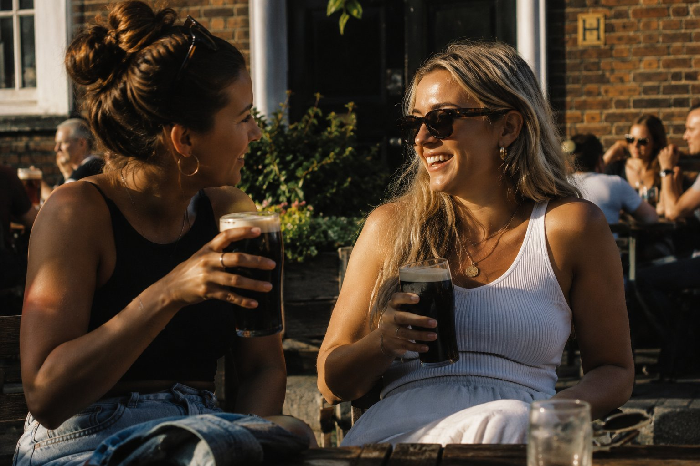
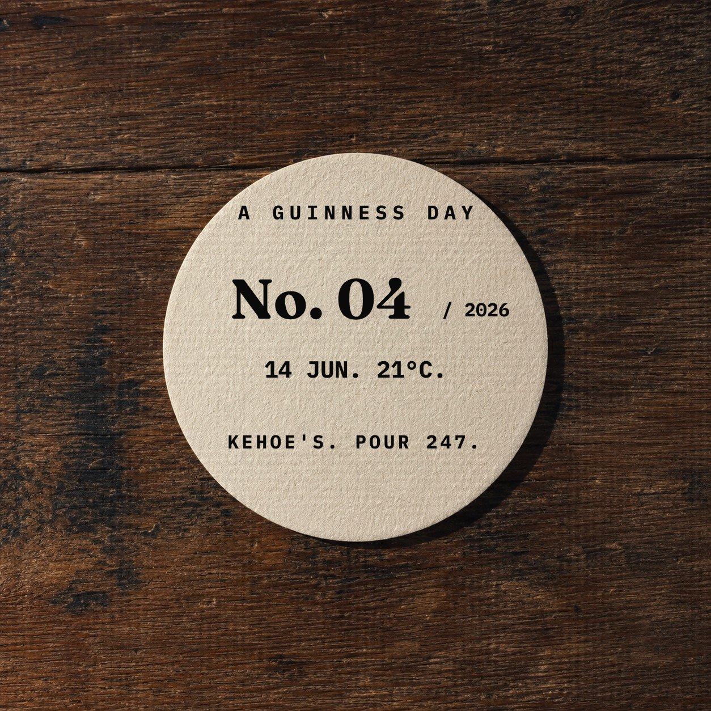
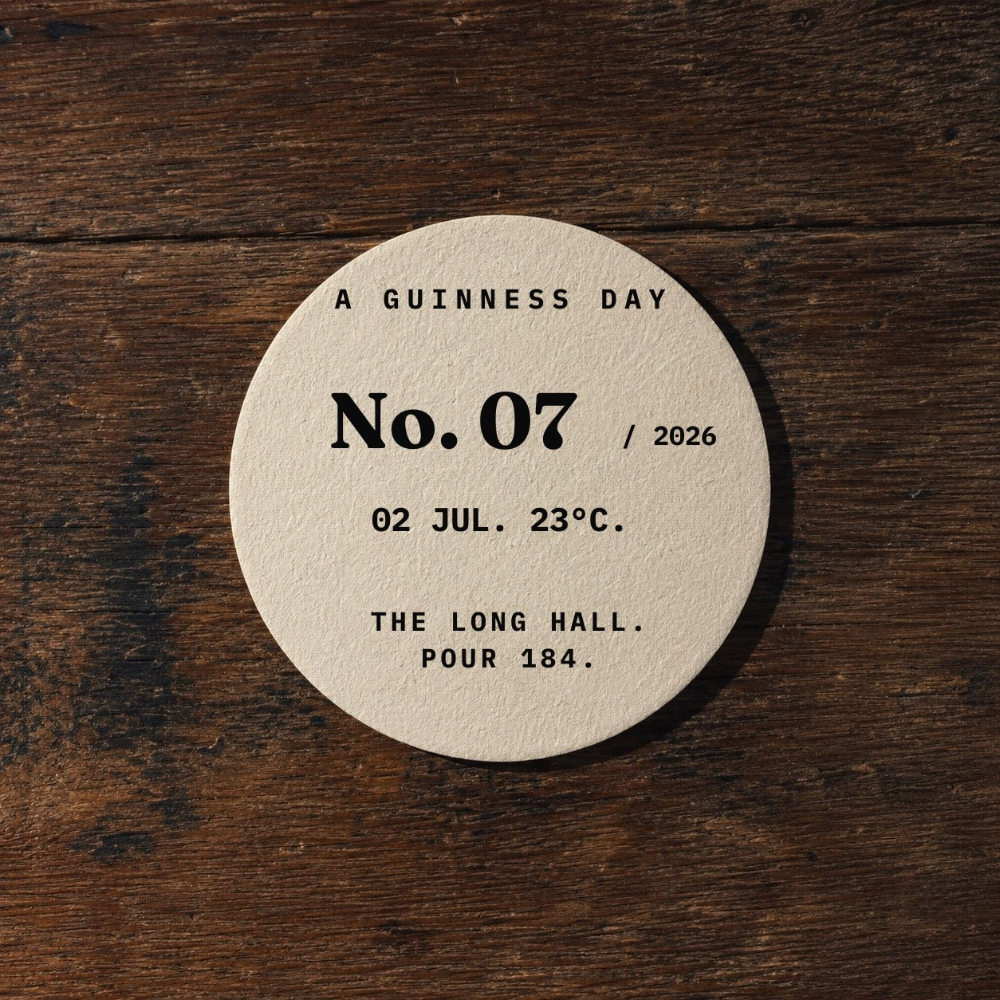
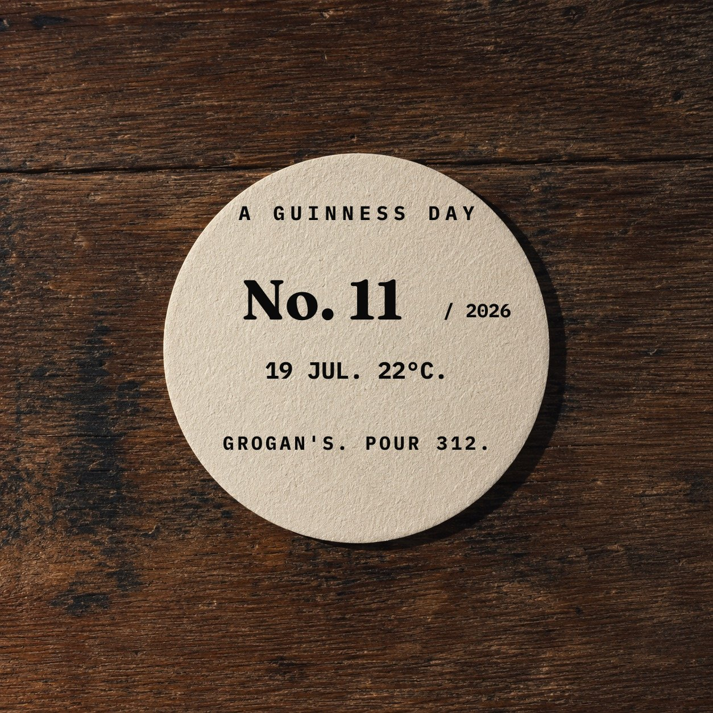
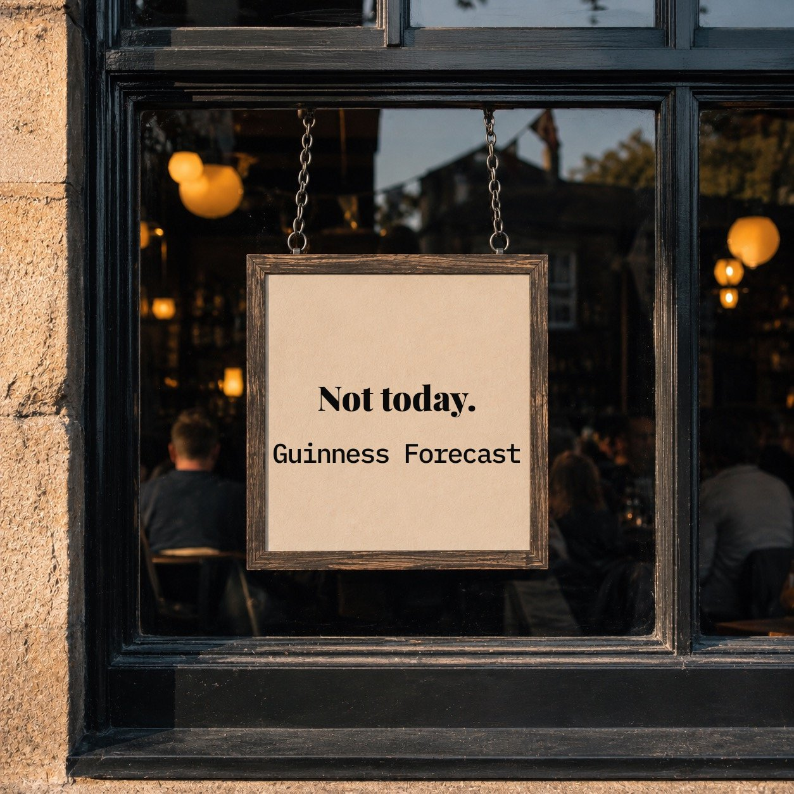
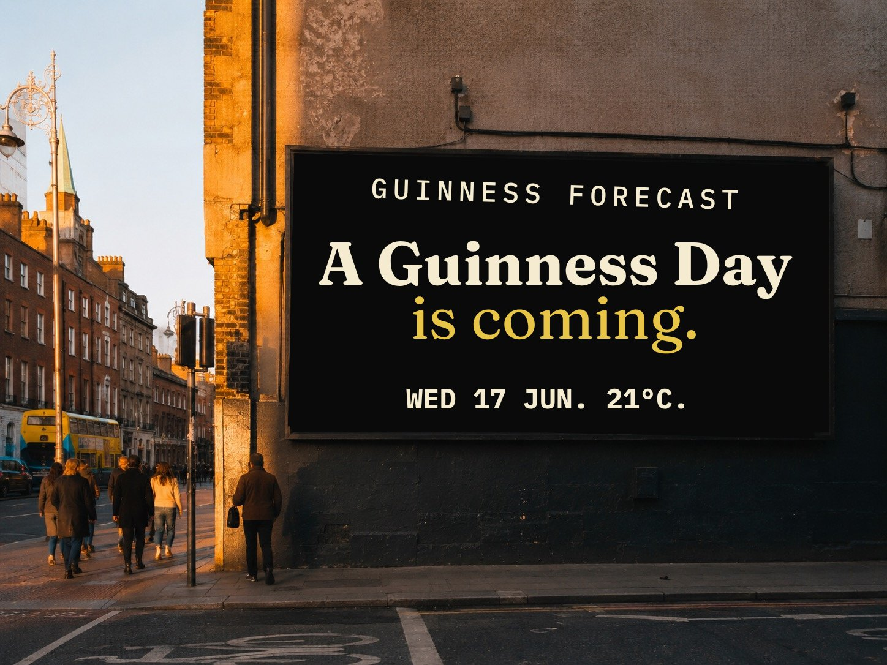
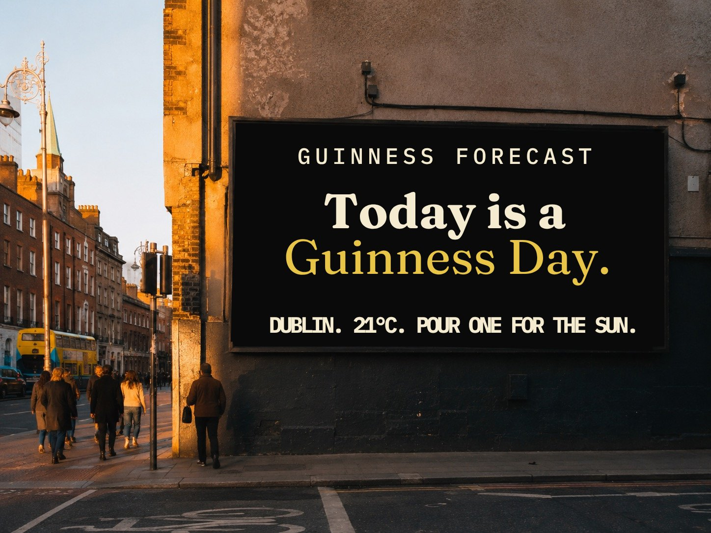
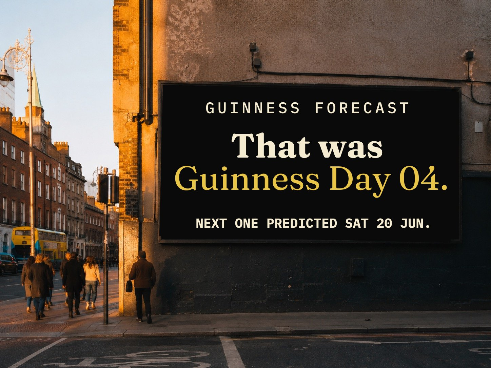
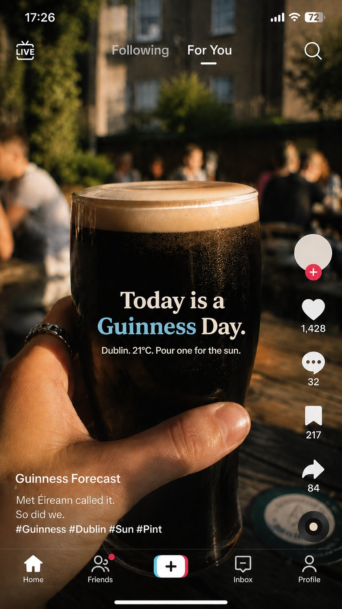

Guinness Forecast
A self-initiated platform exploring how Guinness could own the Irish summer occasion through reactive, weather-led marketing.

A summer platform built around the rarest thing in Ireland.
The opportunity
Guinness is having a moment. Global sales up 13 percent in the year ending June 2025. Penetration among women up 86 percent. Penetration among under-34s up 70 percent. Among 18 to 25 year olds, the share who think Guinness is a cool brand has gone from 22 percent to 67 percent in two years.
The brand has done the hardest part. It has earned cultural permission with Gen Z and women, the two audiences it had spent a century missing. But the work targeting them still leans heavily on sport, pubs, and winter. The audience has arrived. The occasions have not caught up.
There is a clear white space: a summer platform built for the audience already gravitating toward the brand.
The insight
A sunny day in Ireland is not weather. It is a national event. Beer gardens fill within an hour. Plans cancel. Group chats light up. Phones come out. The country gives itself permission to stop.
That is the strategic gold. Most brands chase summer with seasonal campaigns that run for three months whether the sun shows up or not. Guinness has the chance to do the opposite: own the moment, not the season. Show up only when it actually matters.
And the connection writes itself. Guinness has built its brand on a single idea for nearly a century. Good things come to those who wait. In Ireland, the sun is one of them.

The audience
Young Irish women, 21 to 28. Urban, social, culturally tuned in. They are the audience driving Guinness's recent surge, but their experience of the brand is still mostly winter, mostly pub, mostly male coded. The platform is built for them. Not as a niche segment, but as the lead audience the rest follows.
Strategy
The idea
Guinness Forecast is a reactive, weather-led platform that activates only when conditions are right. When Dublin hits 20 degrees and sunshine, a Guinness Day is declared. The platform behaves like a forecast. It predicts. It announces. It records.
Each Guinness Day is numbered across the summer, turning a campaign into a logged event. Day 04. Day 07. Day 11. Scarcity does the marketing.
The hero act: The Coaster
On every Guinness Day, participating Dublin pubs hand out a limited edition collectible coaster with every Guinness ordered. Each coaster is printed with the date, the temperature, the pub name, the Guinness Day number of the year, and a unique pour number for that pub on that day.
These coasters become a record of every good day of Irish summer. People collect them, photograph them, line them up at home, post the keepers. The souvenir is the post.



The hero act: The Sign
Each participating pub flips a hand-painted wooden sign in the window from "Not today" to "A Guinness Day" the moment conditions are confirmed. A small, satisfying, ownable ritual. The two states make the platform tangible. Pubs become a small treasure trail across the city.

The platform activates and deactivates based on real conditions. On the days the forecast does not deliver, the campaign does not pretend it has.
Reactive OOH
Digital boards across Dublin behave like forecast screens. They predict. They announce. They log.



Social
TikTok carries the reactive announcement moments. Instagram carries the keepsake and aesthetic layer.

Met Éireann partnership
Guinness Forecast runs in partnership with Met Éireann, Ireland's national weather service. Met Éireann's data triggers the platform. When their reading hits 20 degrees and sunshine in Dublin, the campaign activates automatically. Boards flip, pubs receive coasters, social announces.
The partnership gives the platform credibility. This is not Guinness inventing the moment. It is the national authority confirming it. It also unlocks earned media. Weather presenters could naturally reference "tomorrow looks like a Guinness Day" during forecasts.
Visual identity and design system
The visual identity is built around a simple rule: dark surfaces carry colour, light surfaces stay monochrome.
Why it works
The platform does not invent a story. It surfaces one that has been sitting under Guinness's nose for a century. Sunny days in Ireland are rare and worth marking. Guinness has always been about rare, slow, worth the wait. Two truths, one idea.
It also earns its place commercially:
A self-initiated project by Sanchi Ahuja. Not affiliated with Guinness or Diageo.